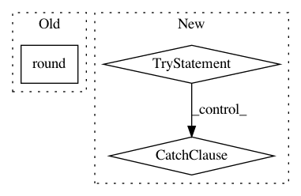

746653d9311be6c2b9841758990d3997d07dfa2a,umap/umap_.py,,nearest_neighbors,#Any#Any#Any#Any#Any#Any#Any#,191
Before Change
// TODO: Hacked values for now
n_trees = 5 + int(round((X.shape[0]) ** 0.5 / 20.0))
n_iters = max(5, int(round(np.log2(X.shape[0]))))
if verbose:
print(ts(), "Building RP forest with", str(n_trees), "trees")
After Change
n_trees = 5 + int(round((X.shape[0]) ** 0.5 / 20.0))
n_iters = max(5, int(round(np.log2(X.shape[0]))))
try:
// Use pynndescent, if installed (python 3 only)
from pynndescent import NNDescent
nnd = NNDescent(
X,
n_neighbors=n_neighbors,
metric=metric,
metric_kwds=metric_kwds,
random_state=random_state,
n_trees=n_trees,
n_iters=n_iters,
max_candidates=60,
verbose=verbose,
)
knn_indices, knn_dists = nnd._neighbor_graph
rp_forest = nnd._rp_forest
except ImportError:
// Otherwise fall back to nn descent in umap
if callable(metric):
distance_func = metric
elif metric in dist.named_distances:
distance_func = dist.named_distances[metric]
else:
raise ValueError("Metric is neither callable, " + "nor a recognised string")
if metric in (
"cosine",
"correlation",
"dice",
"jaccard",
"ll_dirichlet",
"hellinger",
):
angular = True
rng_state = random_state.randint(INT32_MIN, INT32_MAX, 3).astype(np.int64)
if scipy.sparse.isspmatrix_csr(X):
if metric in sparse.sparse_named_distances:
distance_func = sparse.sparse_named_distances[metric]
if metric in sparse.sparse_need_n_features:
metric_kwds["n_features"] = X.shape[1]
elif callable(metric):
distance_func = metric
else:
raise ValueError(
"Metric {} not supported for sparse " + "data".format(metric)
)
// metric_nn_descent = sparse.make_sparse_nn_descent(
// distance_func, tuple(metric_kwds.values())
// )
if verbose:
print(ts(), "Building RP forest with", str(n_trees), "trees")
rp_forest = make_forest(X, n_neighbors, n_trees, rng_state, angular)
leaf_array = rptree_leaf_array(rp_forest)
if verbose:
print(ts(), "NN descent for", str(n_iters), "iterations")
knn_indices, knn_dists = sparse_nn.sparse_nn_descent(
X.indices,
X.indptr,
X.data,
X.shape[0],
n_neighbors,
rng_state,
distance_func,
tuple(metric_kwds.values()),
max_candidates=60,
rp_tree_init=True,
leaf_array=leaf_array,
n_iters=n_iters,
verbose=verbose,
)
else:
// metric_nn_descent = make_nn_descent(
// distance_func, tuple(metric_kwds.values())
// )
if verbose:
print(ts(), "Building RP forest with", str(n_trees), "trees")
rp_forest = make_forest(X, n_neighbors, n_trees, rng_state, angular)
leaf_array = rptree_leaf_array(rp_forest)
if verbose:
print(ts(), "NN descent for", str(n_iters), "iterations")
knn_indices, knn_dists = nn_descent(
X,
n_neighbors,
rng_state,
distance_func,
tuple(metric_kwds.values()),
max_candidates=60,
rp_tree_init=True,
leaf_array=leaf_array,
n_iters=n_iters,
verbose=verbose,
)
if np.any(knn_indices < 0):
warn(
"Failed to correctly find n_neighbors for some samples."
"Results may be less than ideal. Try re-running with"
"different parameters."
)
if verbose:
print(ts(), "Finished Nearest Neighbor Search")
return knn_indices, knn_dists, rp_forest
In pattern: SUPERPATTERN
Frequency: 3
Non-data size: 3
Instances
Project Name: lmcinnes/umap
Commit Name: 746653d9311be6c2b9841758990d3997d07dfa2a
Time: 2019-08-15
Author: tom.e.white@gmail.com
File Name: umap/umap_.py
Class Name:
Method Name: nearest_neighbors
Project Name: dPys/PyNets
Commit Name: 449ce796e6f506a28075f16099c986e298141569
Time: 2017-11-12
Author: dpisner@utexas.edu
File Name: pynets/nodemaker.py
Class Name:
Method Name: get_names_and_coords_of_parcels
Project Name: home-assistant/home-assistant
Commit Name: 6a665ffb84a4da39b3eb6e3ec0f107f910ead9df
Time: 2018-02-26
Author: 30130371+cdce8p@users.noreply.github.com
File Name: homeassistant/components/homekit/sensors.py
Class Name:
Method Name: calc_temperature